A computer has hardware (CPU, memory, I/O devices) and application programs that need that hardware. The operating system (OS) is the program that sits between the two. It hides hardware complexity from programs and shares the hardware among them safely.
1. What an Operating System Is
The OS has two goals:
- User convenience: hide hardware complexity. A
program calls
read()instead of driving the disk controller itself. - Efficient hardware use: allocate the CPU, memory and I/O devices so they stay busy.
The two goals can conflict. Smart resource allocation needs a lot of information about the user programs, and collecting that information costs time and makes the system harder to use.
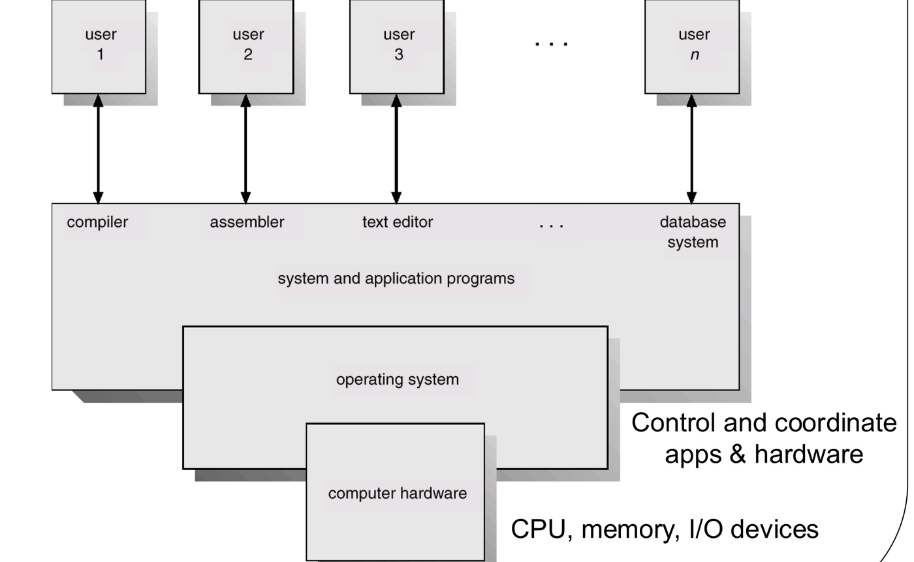
A computer system has four components: hardware (basic resources), OS (controls and coordinates the hardware among programs and users), application programs (compilers, databases, games) and users (people, machines, other computers).
The lecture gives three definitions of an OS:
| View | Meaning |
|---|---|
| Resource allocator | Manages and allocates the hardware resources. |
| Control program | Controls the execution of user programs and the operation of I/O devices. |
| Kernel | The one “core” program that is always ready to accept commands from users and from hardware. Everything else is an application program. |
2. Types of Computing Systems
| System | How it works | Key point |
|---|---|---|
| Simple batch | The operator batches similar jobs to reduce setup time; automatic job sequencing moves from one job to the next. One user job in memory at a time. | Simple memory layout, but the CPU idles whenever the job waits for I/O. |
| Multiprogrammed | Several jobs are kept in memory; the CPU switches to another job when one waits for I/O. Jobs are swapped between memory and disk. | Needs memory management (memory for several jobs), CPU scheduling (choose among ready jobs) and I/O device scheduling (allocate devices to jobs). |
| Time-sharing | The CPU is multiplexed among jobs in memory fast enough to support on-line interaction with many users: when the OS finishes one command, it takes the next command from the user. | The lecture also calls multiprogrammed systems “time-sharing”, because jobs take turns on the CPU in time. |
| Desktop | A personal computer dedicated to one user, with keyboard, mouse, display and printer. | Focus is user convenience and responsiveness (Windows, macOS, UNIX, Linux). |
| Embedded / cyber-physical | Physical systems monitored and controlled by a reliable computing and communication core (cars, avionics, industrial control, sensor networks). | Resource constrained: low power, small memory, low bandwidth. Use domain-specific OSes. |
| Real-time | Controls a dedicated application (industrial control, airbags, medical devices) with well-defined fixed time constraints. | A job must finish by its deadline. Correct but late is wrong. |
| Handheld | Phones and tablets (iOS, Android, HarmonyOS). | Limited memory, slow processors, small screens. |
| Multiprocessor | More than one CPU, or one CPU with several cores, communicating through shared memory (tightly coupled). | Higher throughput, cheaper than several single-CPU machines (memory and I/O are shared), higher reliability through redundancy. |
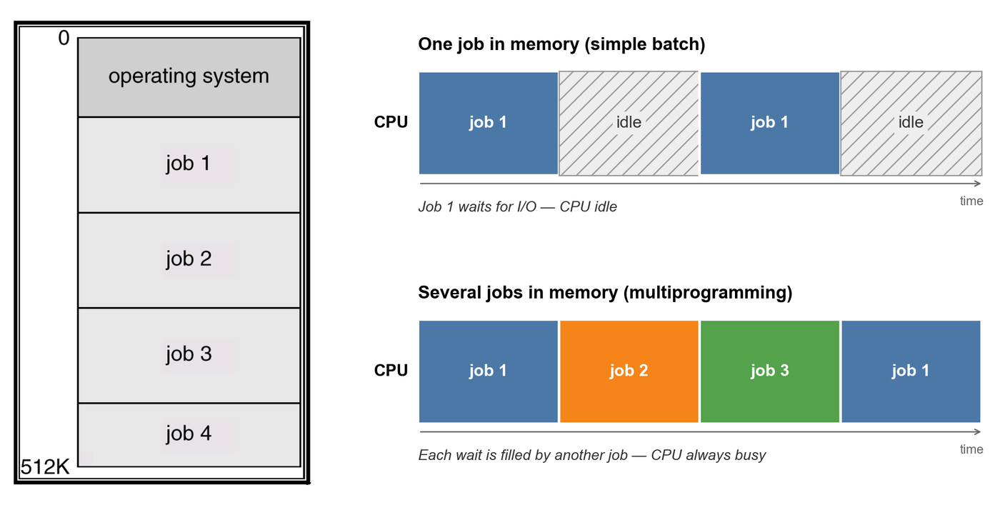
Multi-threading vs. multiprogramming vs. multiprocessing
| Term | Meaning | Level |
|---|---|---|
| Multi-threading | Several threads of execution inside one process. | Software, inside a process |
| Multiprogramming | Several processes in main memory, ready to execute. Works on one core. | OS |
| Multiprocessing | Several CPU cores execute instructions in true parallel. | Hardware |
Multiprogramming (1 core): [ P1 ][ P2 ][ P1 ][ P2 ] interleaved
Multiprocessing (2 cores): core 1 [ P1 ──────────── ]
core 2 [ P2 ──────────── ] parallelA multiprocessor still needs multiprogramming: without it, only one job is in memory and most cores idle. Multiprogramming does not give parallel execution; parallelism comes only from the hardware.
Tutorial 1 Q3: Multiprogramming vs. multiprocessing
Question: Distinguish between multiprogramming and multiprocessing. What were the key motivations for the development of each?
Answer:
- Multiprogramming runs more than one program concurrently on a computer, even one with a single-core CPU. The CPU switches to another program when the current one waits for I/O. Motivation: keep the CPU busy (higher CPU utilization).
- Multiprocessing runs programs on a computer with more than one processing core. Motivation: higher throughput through true parallel execution, and reliability (one core can fail while the others run).
- The tutorial’s analogy: a multiprogramming shop has one counter, so it takes B’s order while A’s food cooks. A multiprocessing shop has two counters that serve A and B at the same time.
Past-paper T/F: System types
- AY15/16 S2 Q1a(iv): A multi-processing system usually has multi-programming capacity. True. Multiprocessing is the hardware’s ability to run several processes at once; multiprogramming is the software’s ability to keep several programs ready.
- AY16/17 S2 Q1a(iii): In multi-programming systems, if a job is waiting for I/O, then the CPU will wait for this job. False. The CPU runs the next ready job.
- AY18/19 S2 Q1a(i): I/O device utilization is higher in batch systems than in multi-programming systems. False. Multiprogramming keeps several jobs active, and I/O device scheduling keeps more devices busy.
- AY17/18 S1 Q1a(v): Multiprogramming is not possible on a CPU with multiple cores. False. Each core can still switch among several resident processes.
- AY17/18 S2 Q1a(iv): Multi-programming has little benefit in multi-core systems. False. Each core still needs other ready processes to switch to when its process waits.
- AY16/17 S1 Q1a(i): All time-sharing systems are also real-time systems. False. Time-sharing aims at fast average response; real-time needs guaranteed deadlines.
- AY19/20 S1 Q2a(ii): Simple batch systems cannot be used in multiprocessors. False. Nothing stops a multiprocessor from running jobs one batch at a time.
3. Computer-System Operation: Interrupts and DMA
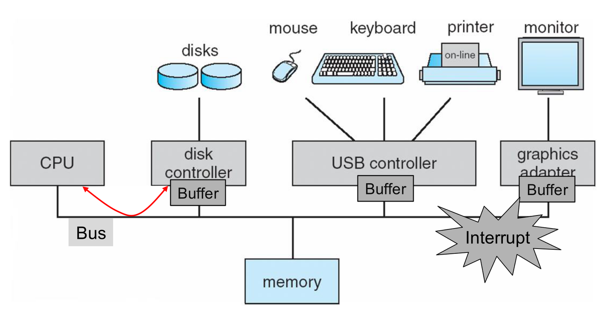
- I/O devices and the CPU execute concurrently.
- Each device controller is in charge of one device type and has a local buffer.
- The controller moves data between its buffer and memory, then tells the CPU it has finished by raising an interrupt.
Interrupts
An interrupt transfers control to an interrupt service routine (ISR) through the interrupt vector, a table holding the addresses of all ISRs. A trap is an interrupt that the CPU itself generates, caused by a software error (an unhandled exception such as divide-by-zero) or a software request (a system call).
The OS is interrupt driven: it runs only when an interrupt or trap arrives. Without interrupts the OS would have to poll each device for completion, wasting CPU time.
Interrupt handling sequence (the sample concept quiz tests this exact order):
- Disable interrupts, so no incoming interrupt is lost while this one is processed.
- Save the program context (registers and program counter). The lecture also calls this a context switch.
- Determine the interrupt type and locate the ISR in the interrupt vector table.
- Execute the ISR.
- Restore the program context.
- Enable interrupts and resume.
| Hardware interrupt | Trap | |
|---|---|---|
| Source | A device controller (timer, disk, keyboard) | The CPU, during an instruction |
| Timing | Asynchronous | Synchronous |
| Causes | I/O completion, timer expiry | Software error or system call |
Interrupt-driven I/O vs. DMA
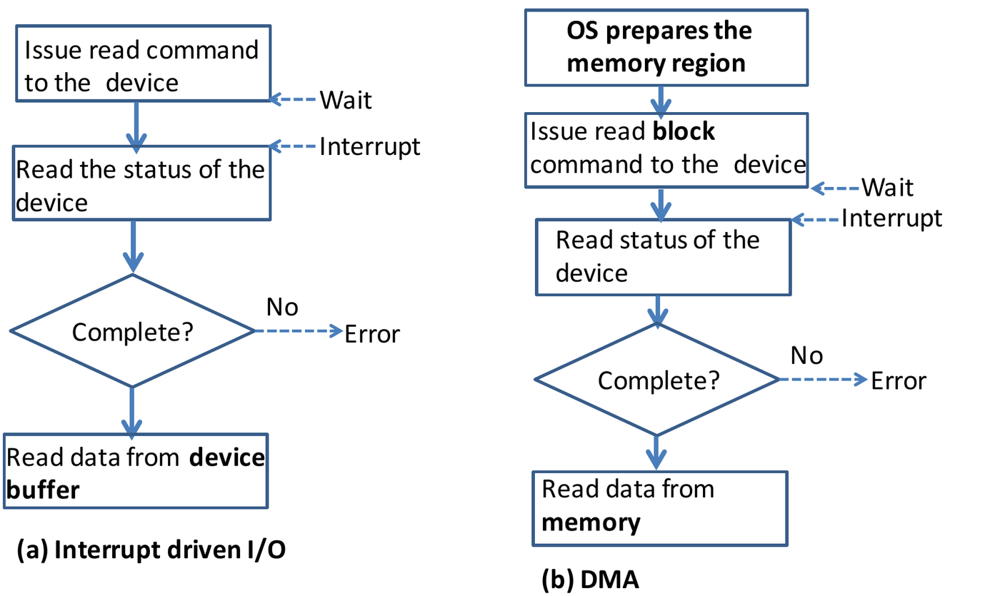
| Interrupt-driven I/O | Direct Memory Access (DMA) | |
|---|---|---|
| Who copies data | The CPU copies each unit from the controller buffer to memory | The controller copies a whole block to memory without the CPU |
| Interrupts | One per byte or word | One per block |
| Setup | None | The OS sets up the memory block, counters, etc. |
| Suits | Slow devices with small transfers (mouse, keyboard) | High-speed devices that transfer near memory speed (disk, network) |
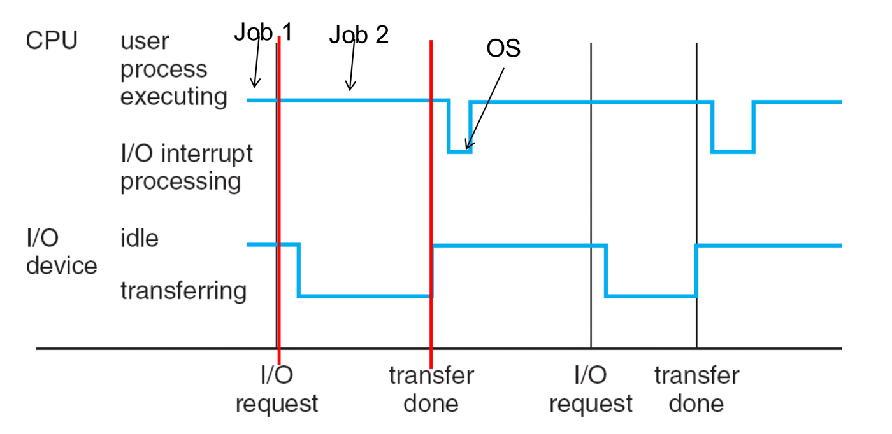
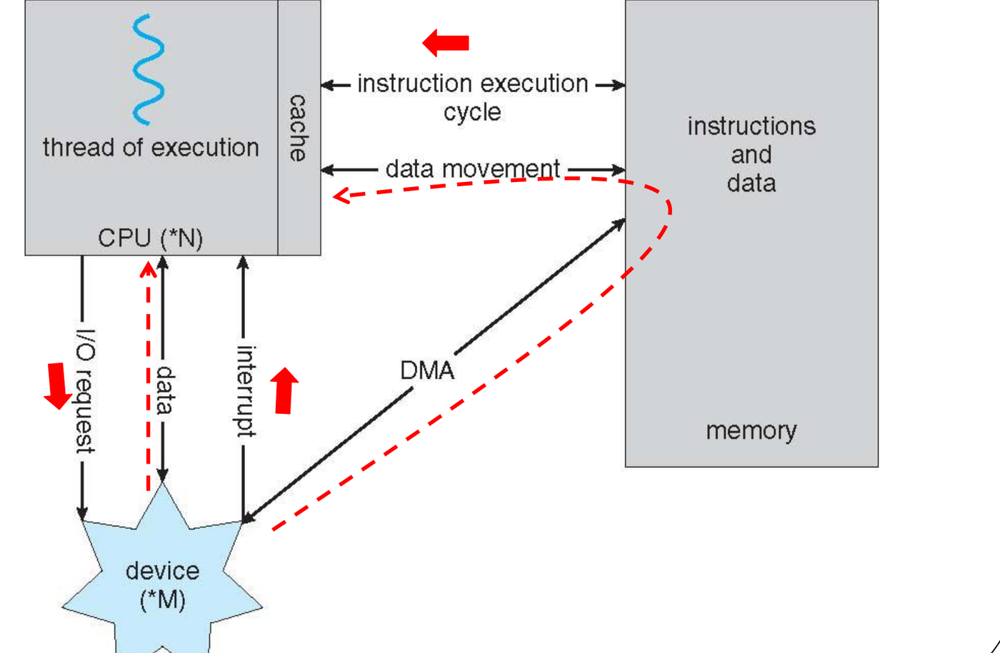
In both cases the requesting process moves from Running to Waiting. DMA frees the CPU to run other processes during the transfer, and DMA still interrupts once, at the end of the block.
The storage hierarchy slides (registers, cache, main memory, disk) are marked not examinable.
Tutorial 1 Q1: Computer organization, interrupts, I/O structure
Question: Review the following concepts on computer-system operation and explain how they relate to operating systems: (a) computer organization, (b) interrupts, (c) I/O structure: interrupt-driven data transfer and DMA data transfer.
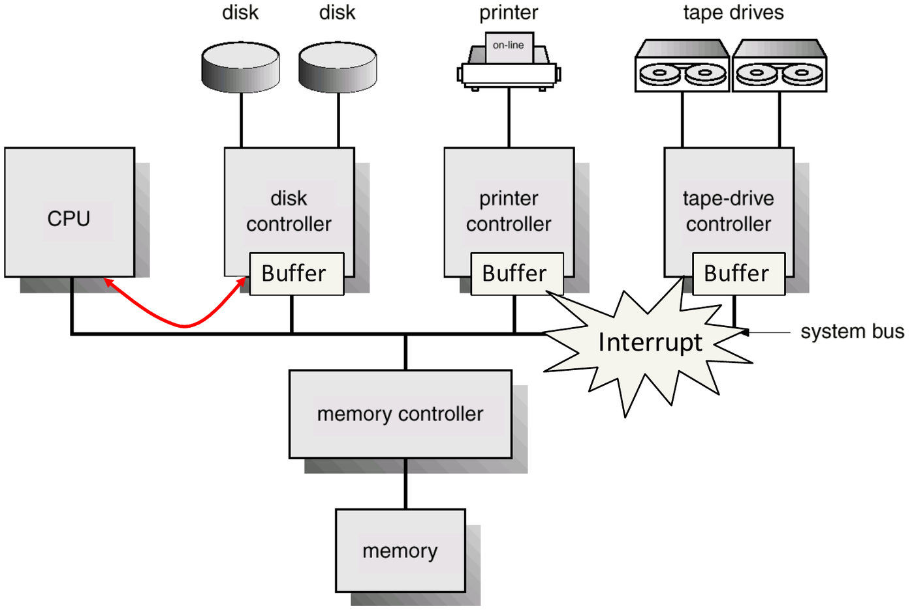
Answer:
- (a) Each device controller is in charge of one device type. The controllers and the CPU communicate over a system bus, and a controller tells the CPU that an operation is done by an interrupt.
- (b) The OS is “interrupt driven”: with no interrupts, the OS does not execute (it idles). Interrupt handling has three steps: save the CPU state, determine the interrupt type, run the ISR for that type.
- (c) Interrupt-driven I/O: the CPU issues a read, waits for the interrupt, then reads the data from the device buffer, one unit at a time. DMA: the OS prepares a memory region and issues a block read; the controller transfers the whole block into memory and interrupts once; the CPU then reads the data from memory.
Past-paper T/F: Interrupts and DMA
- AY15/16 S2 Q1a(iii): The system handles input from a mouse with interrupt-driven I/O, instead of DMA. True. Mouse input is small and occasional; DMA suits large transfers.
- AY16/17 S2 Q1a(iv), AY17/18 S1 Q1a(iv): DMA does not use interrupts / eliminates interrupts. False. DMA interrupts once per block instead of once per byte.
- AY19/20 S1 Q2a(iii): Direct Memory Access (DMA) uses interrupts. True, for the same reason.
- AY17/18 S2 Q1a(v): Interrupt-driven I/O can cause much CPU overhead. True. One interrupt per unit of data means constant switches into the kernel.
- AY16/17 S1 Q1a(v): When a hardware interrupt arrives, the OS changes the running process from Running to Waiting. False. The running process goes to Ready so the ISR can run. A process enters Waiting only when it requests I/O or waits for an event. (The posted student solution says True; that is wrong.)
4. Hardware Protection
Hardware gives the OS three protection mechanisms.
Dual-mode operation
A mode bit in the CPU shows the current mode:
| Mode bit | Mode | Can run |
|---|---|---|
| 0 | Monitor (also supervisor, system or kernel) mode | All instructions, including privileged instructions |
| 1 | User mode | Unprivileged instructions only |
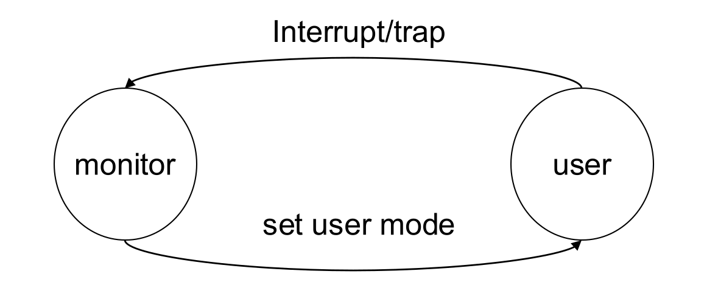
- An interrupt or trap makes the hardware switch to monitor mode.
- The OS sets user mode before it returns control to a user program.
- Privileged instructions run only in monitor mode.
Kernel mode is not root/administrator. Kernel/user mode is a hardware operating mode; root is a user account in the OS. Programs run by root still execute in user mode. Root can only run code in kernel mode indirectly, for example by loading a kernel module.
I/O protection
A user program might issue illegal I/O (read a file that does not exist, or access a device without permission). So:
- All I/O instructions are privileged.
- All I/O goes through the OS, which checks that it is correct and legal.
- If a program tries to execute an I/O instruction directly, bypassing the OS, the CPU generates a trap and gives control to the OS.
Memory protection: base and limit registers
The OS must protect at least the interrupt vector and the ISRs. Two CPU registers define the legal address range of the running program:
- Base register: the first legal physical address.
- Limit register: the size of the legal range.
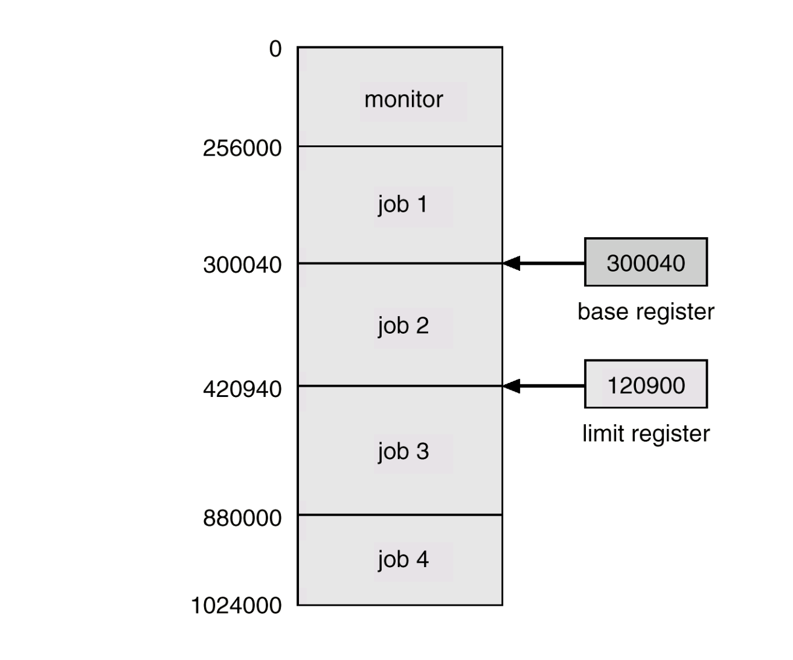
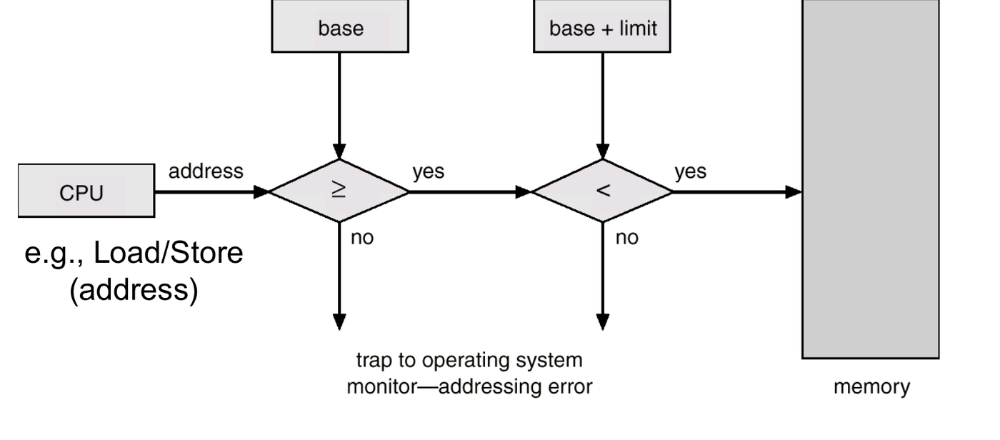
Any other address makes the CPU trap to the OS. Loading the base and limit registers is a privileged instruction. There is only one base/limit pair in the hardware; the OS saves each process’s values in its PCB and loads them before running that process.
Tutorial 1 Q2: True/false on protection
Question: Indicate whether the following statements are true or false. Justify your answers. (a) All I/O instructions are privileged instructions. (b) Given a base register value of 0x1000 and a limit register value of 0x1000, access to memory location 0x1FFF will generate a trap. (c) Popular operating systems for personal computer use (such as Windows and Linux) are real-time systems. (d) A system call always generates a trap.
Answer:
- (a) True. I/O must go through the OS to make sure it is correct and legal.
- (b) False. The legal range is
.
0x1FFFis the last legal address, so there is no trap.0x2000would trap. - (c) False. They are time-sharing systems.
- (d) True. On a system call the hardware switches from user to kernel mode and generates a trap; the kernel then finds and runs the system-call function. (Not every trap is a system call: errors also trap.)
Past-paper T/F: Modes, root and registers
- AY15/16 S2 Q1a(i): Privileged instructions can be executed in user mode. False. They run only in kernel mode.
- AY17/18 S2 Q1a(i): To ensure security, the monitor mode should be used for all program instructions. False. A crash in monitor mode can bring down the whole OS; user mode isolates each application.
- AY16/17 S2 Q1a(ii): Some I/O instructions do not require a switch to kernel mode. False. All I/O instructions are privileged.
- AY18/19 S1 Q1a(iii): Kernel mode is equivalent to “Administrator” or “root” privileges. False. Kernel mode is a hardware mode; root runs in user mode.
- AY19/20 S1 Q2a(iv): I/O instructions cannot be directly executed by a “root” user in Linux. True. Root is still a user account and must use system calls.
- AY18/19 S1 Q1a(v): Base and limit register values are stored in the PCB. True. The PCB holds memory-management information.
- AY19/20 S1 Q2a(v): Base and limit registers are used by the kernel to access the PCB of the current running process. False. They define the legal address range of a user program.
5. System Calls
System calls are the interface between a user program and the OS. They are generally available as assembly-language instructions; languages such as C/C++ can also make them directly. Every system call switches the CPU from user mode to kernel mode.
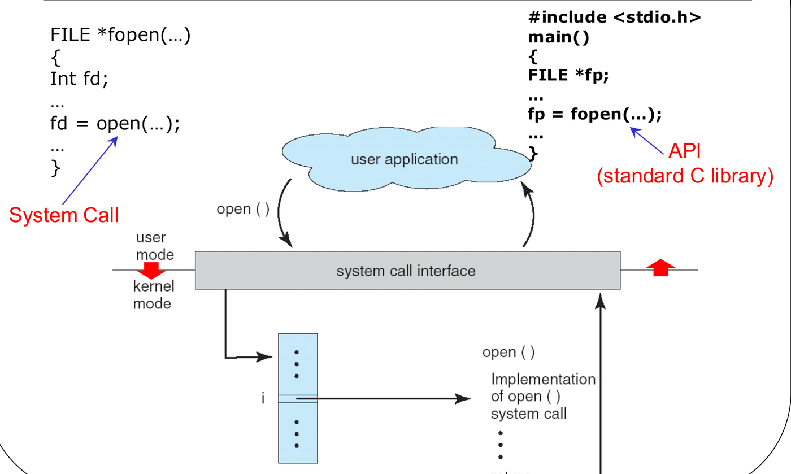
Programs usually call an API function, such as
fopen() in the standard C library. The API function runs in
user mode and calls the real system call (open()) inside
it. So an API call is not itself a system call, and some API functions
never enter the kernel.
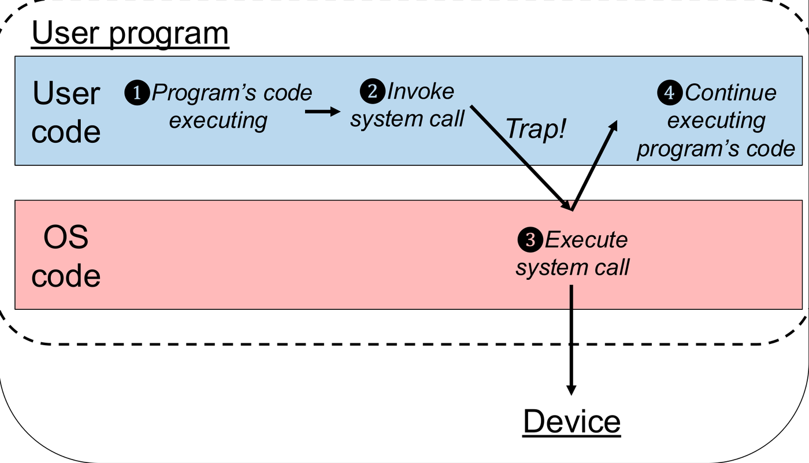
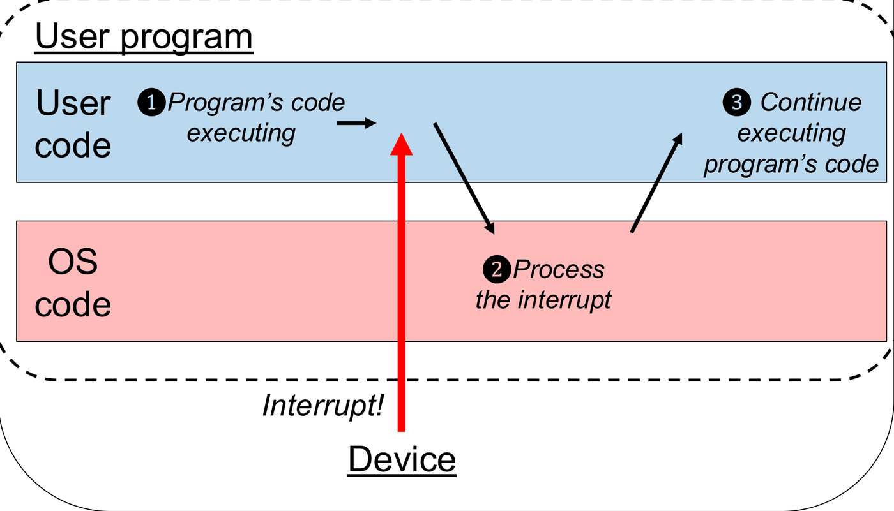
System call sequence (sample concept quiz wording): the CPU generates a trap → switches to kernel mode and transfers control to the OS → the OS identifies the system-call function and runs it → the OS switches back to user mode and returns control to the user program.
Method: counting mode switches
- Pure computation (arithmetic, assignments, loops) runs in user mode: no switch.
- Each statement that needs the OS (console or file I/O,
fork(),exit(), shared-memory setup) is a system call: one switch to kernel mode and one back. - Count two switches per system call.
AY17/18 S2 Q1d: Mode switches and context switches in a program
Question: A program has been written to do the following tasks sequentially: read a number from the keyboard, compute an arithmetic expression, and store the result into a shared memory location. (i) Identify and justify all the mode switches in the above program. (ii) Two processes P1 and P2 have been created from this program, all at time 0, in the order of P1 then P2. List and explain all the possible context switches for P1 and P2, assuming First-Come-First-Serve scheduling is used.
Solution:
- (i)
- Reading the keyboard is I/O → system call → user to kernel, then kernel to user when the value returns.
- The arithmetic runs in user mode → no switch.
- Storing into shared memory needs the OS: memory protection is set by loading the base and limit registers, which are privileged → user to kernel, then kernel to user.
- Total: 4 mode switches.
- (ii) FCFS is nonpreemptive, so a switch happens
only when the running process blocks or ends.
- P1 runs first and blocks on its keyboard read → switch P1 → P2.
- P2 runs and blocks on its own keyboard read (if P1’s input has not arrived yet, the CPU idles).
- When a read completes, that process goes Ready and is dispatched; it computes, stores, and exits. If P2 is still Ready or becomes Ready afterwards, the OS switches to P2 (or back to P1, whichever read completed second).
- The posted solution describes one case: P1 waits for I/O, P2 computes, then the OS switches back to P1 to store its result.
Past-paper T/F: Traps and system calls
- AY18/19 S2 Q1a(ii): A trap requires a switch from monitor mode to user mode. False. A trap switches from user mode to monitor mode.
- AY18/19 S1 Q2a(ii): A trap is an interrupt generated by the CPU in response to a faulty software instruction or system call. True. That is the definition.
- AY19/20 S1 Q2a(vi): The
Wait()system call of a semaphore system executes in user mode. False. It is a system call, so it runs in kernel mode (and it may disable interrupts, which is privileged).